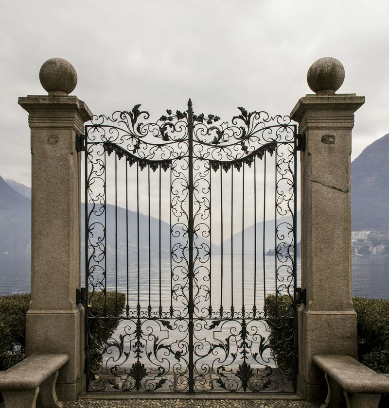
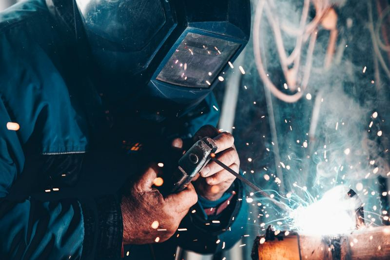
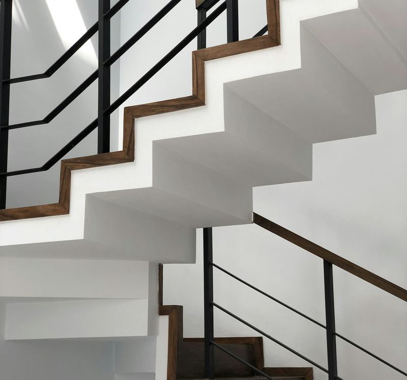
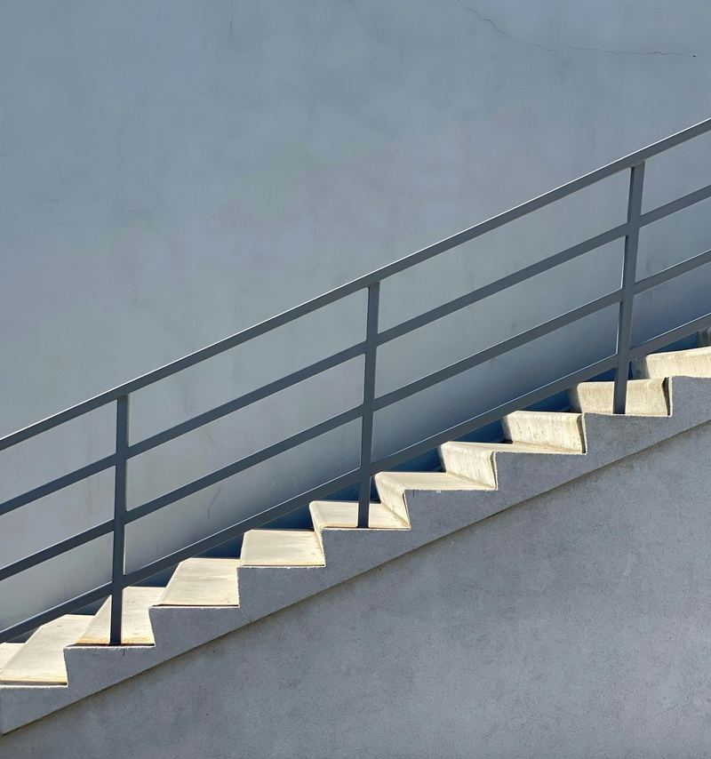
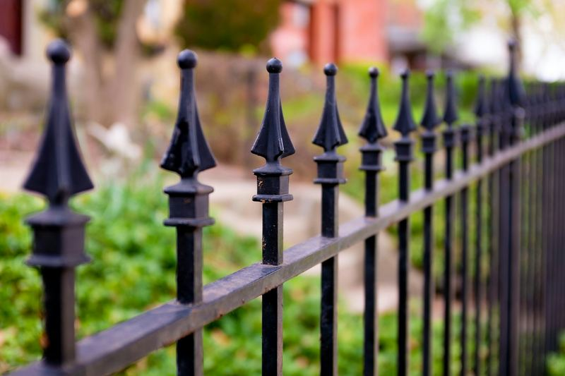
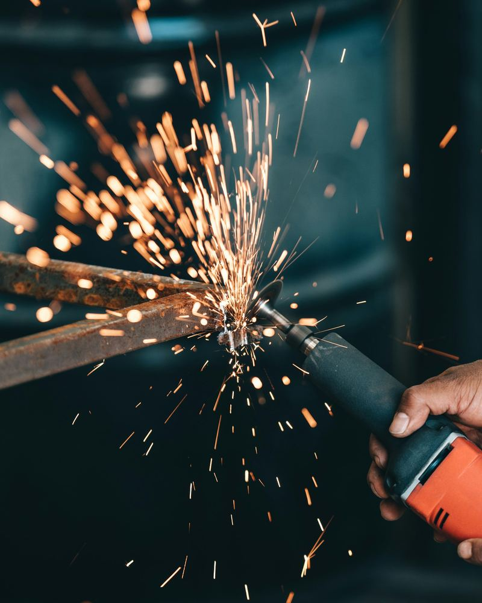

Brány a branky
Posuvné samonosné, kované a křídlové brány i branky. Na přání s elektrickým pohonem a dálkovým ovládáním.
Zámečnictví PF z Havířova-Prostřední Suché. Vyrábíme a montujeme schody, mříže, zábradlí i atypické výrobky a posuvné, kované i křídlové brány, na přání s dálkovým ovládáním.
Zámečnictví od roku 1996 · Havířov a okolí

Vyberte typ, šířku vjezdu a výplň. Bránu si můžete rovnou otevřít a návrh nám poslat. Přesnou cenu spočítáme po zaměření.
Posuvná samonosná brána, 400 cm
Poptat tuto bránu
Posuvné samonosné, kované a křídlové brány i branky. Na přání s elektrickým pohonem a dálkovým ovládáním.

Na schody, balkony a terasy, dovnitř i ven.

Kovová schodiště a venkovní schody na míru.

Mříže do oken a dveří, plotová pole.

Když potřebujete něco, co se nedá koupit hotové.